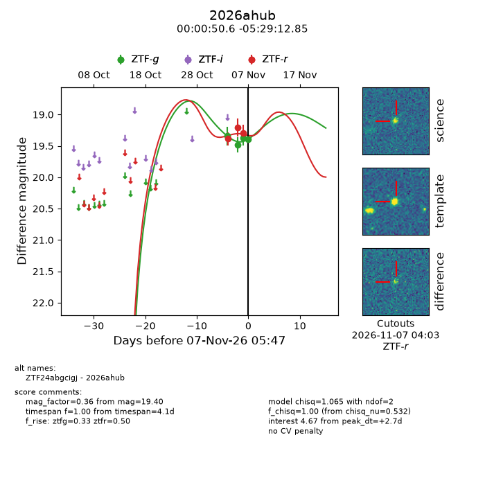
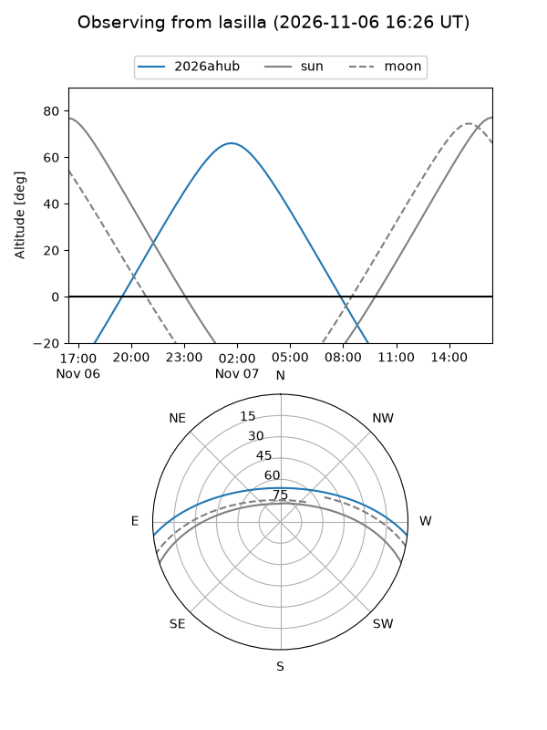
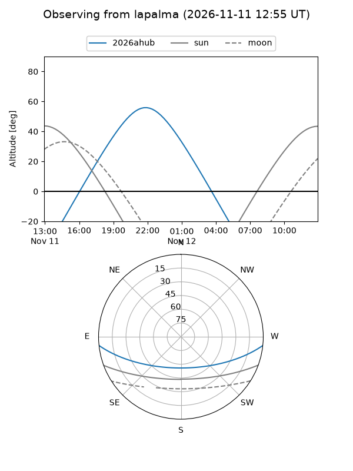
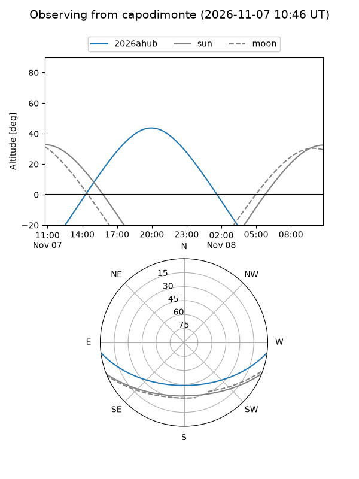
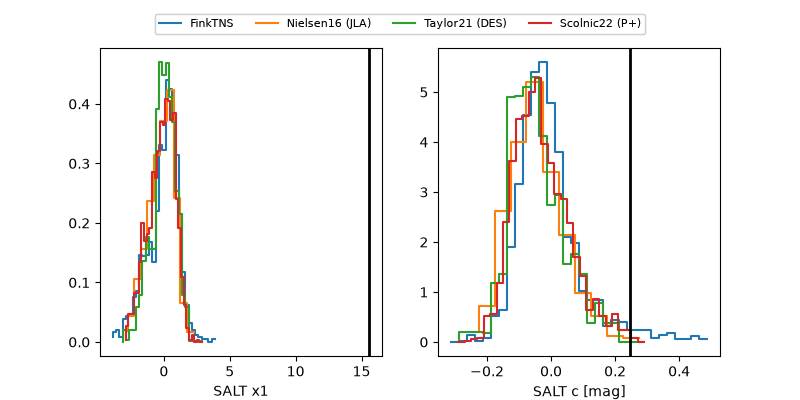

2026ahub
Target 2026ahub at 2026-11-07 05:49
Aliases and brokers:
FINK-ZTF: ztf.fink-portal.org/ZTF24abgcigj
Lasair-ZTF: lasair-ztf.lsst.ac.uk/objects/ZTF24abgcigj
ALeRCE-ZTF: alerce.online/object/ZTF24abgcigj
YSE-PZ: ziggy.ucolick.org/yse/transient_detail/2026ahub
TNS name: wis-tns.org/object/2026ahub
Direct TNS query: direct search
alt names
ZTF24abgcigj (ztf,fink_ztf)
2026ahub (tns,yse)
Coordinates:
equatorial (ra, dec) = 0.2110,-5.48690
equatorial (HMS+DMS) = 00:00:50.63,-05:29:12.85
galactic (l, b) = (91.5814,-65.23192)
Flags:
peak dt: +2.7
Photometry:
last ztfg=19.40, ztfr=19.29
4 ztfg, 3 ztfr detections
Lightcurve

Visibility



Additional plots
